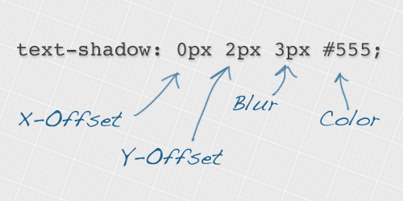

Letterpress Effect
The letterpress effect is becoming hugely popular in web design, and with a couple of modern browsers now showing support for the text-shadow CSS3 property, it’s now simple and easy to create the effect with pure CSS. No Photoshop trickery here! Letterpress – Isn’t that a type of industrial print method? That’s right! But the effect has also made its way into web design. Check out the previous feature showcasing examples of how designers are using this cool ‘de-bossed’ look on designs across the web. With the recent support of text-transform in Safari and Firefox (3.1+) the effect can easily be created without needing to use any image replacement techniques. This means your text is much easier to edit and has the benefit of being rendered directly in the browser.
https://line25.com/wp-content/uploads/2009/letterpress/demo/demo.html
How text-shadow works

https://line25.com/wp-content/uploads/2010/text-shadow/text-shadow.png
The text shadow CSS property is used to add shading to any text related HTML element. The syntax includes figures for the X-offset, the Y-offset, the blur amount and finally the colour of the actual shadow. What is more, you do not have to settle with one shadow, you can build up multiple text-shadow values to create some really cool effects!